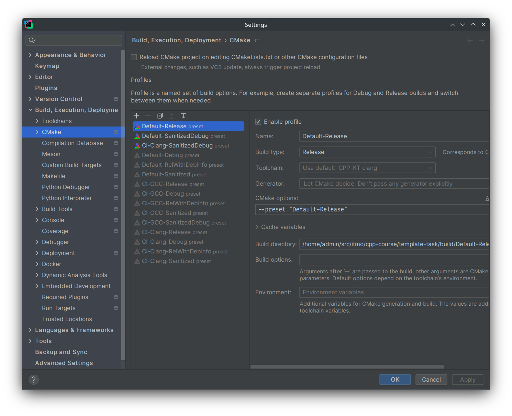

CLion
Рекомендуется пользоваться EAP версией, ибо именно в ней все свежие фиксы и фичи.
Установка
На официальном сайте (ссылка в header-e - кликабельна) можно найти информацию об установке через Toolbox (если вы используете другие IDE от Jetbrains) или об установке на Windows.
На Ubuntu альтернативно доступна установка через snap, если вы хотите обновлять среду разработки через пакетный менеджер:
$ sudo apt install snap
$ sudo snap install clion --classic
clang-tidy
Clion имеет встроенный clang-tidy, но вы можете указать внешний, если он есть на вашей системе.
Нужно убедиться, что вы поставили галочку на
Prefer .clang-tidy files over IDE settingsчтобы использовать .clang-tidy курса.
Path: Settings / Preferences | Editor | Inspections - C/C++, General, Clang-Tidy

clang-format
Clion имеет встроенный (альтернативный) clang-format, но вы можете указать внешний, если он есть на вашей системе.
Нужно убедиться, что вы поставили галочку на
Enable ClangFormat (only for C/C++/Objective-Cчтобы использовать .clang-format курса.
Path: Settings / Preferences | Editor | Code Style - ClangFormat

Либо другой, более быстрый вариант. В нижней панели экрана, поставить соотвествующую галочку.

Интеграция с CMake presets
При первом открытии проекта, содержащего файл CMakePresets.json, CLion сгенерирует вам профили сборки на основе CMake-пресетов (о них подробнее писали тут) и предложит активировать нужные.
Текущий профиль далее выбирается в правом верхнем углу, возле списка конфигураций запуска.
Если в какой-то момент вы захотите активировать или деактивировать какие-то профили, это можно сделать в File->Settings->Build,Execution...->CMake.

Если после добавления конфигураций CMake падает с ошибкой при попытке сконфигурироваться, и вы не понимаете, с чем она связана, есть следующие возможные шаги решения (применяйте до первого сработавшего):
Tools->CMake->Reload CMake Project;Tools->CMake->Reset Cache and Reload Project;- Удалить директорию
build(иcmake-build-*, если такие есть), после чего повторить п.2; - Обратиться за помощью к преподавателям курса.
Полезные ссылки
- Выбор конфигурации сборки. Чем сборка в дебаге отличается от сборки в релизе, рассказывают в 3 семестре на курсе операционных систем.
- Valgrind memcheck: проверки утечек памяти и т.д.